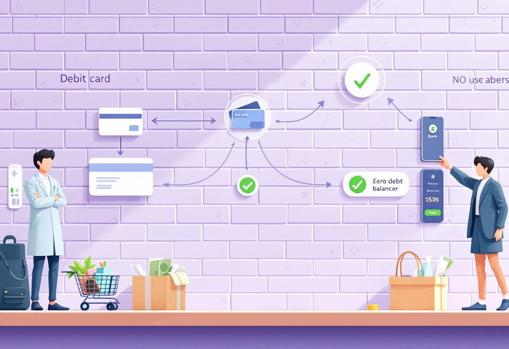
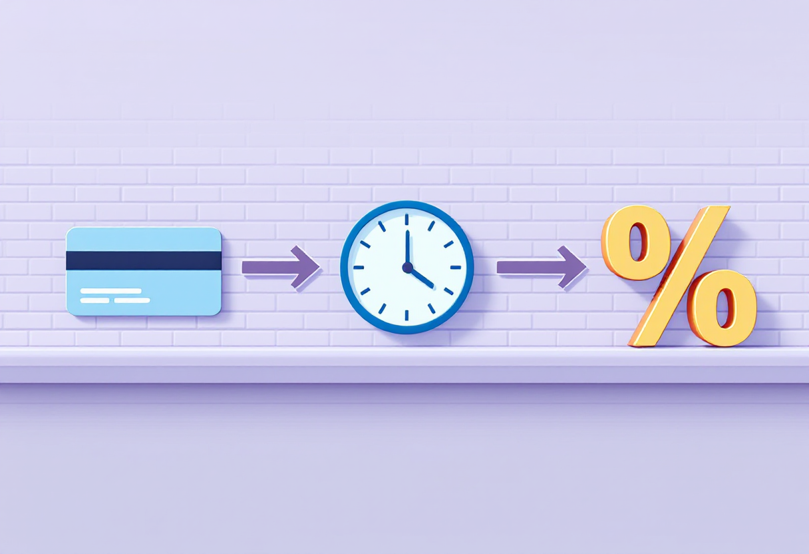
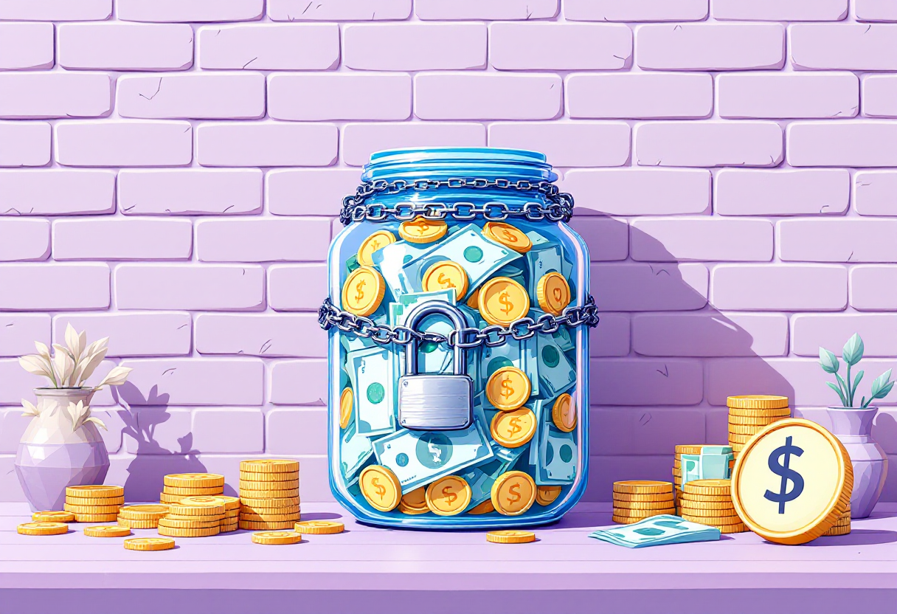

Банківські картки
Як обрати картку, користуватись нею без комісій та тримати гроші під контролем.
Основні типи банківських карток
Банки пропонують різні картки, але для повсякдення найважливіше розуміти різницю між двома основними видами.
- Дебетова картка — твої гроші, які ти поповнюєш і витрачаєш.
- Кредитна картка — гроші банку, які потрібно повернути вчасно.

Дебетова картка
Найзручніший варіант для зарплати, повсякденних покупок і збереження невеликих сум.
- Без кредитних лімітів та боргів.
- Можна підключити онлайн-банкінг та Apple Pay/Google Pay.
- Безкоштовне обслуговування у більшості банків.
- Легко поповнювати та переводити кошти.

Кредитна картка
Зручно для великих покупок або термінових ситуацій, але лише якщо правильно користуватись.
- Грейс-період — період, коли відсотки не нараховуються.
- Потрібно повертати повну суму до кінця місяця.
- Високі штрафи за прострочку.
- Небажано використовувати для зняття готівки — велика комісія.

Безпека та захист грошей
Банківська картка — це ключ до твоїх грошей. Дотримуйся базових правил безпеки.
- Нікому не кажи PIN-код.
- Не передавай картку незнайомим.
- Закривай дані CVV-коду при оплатах.
- Активуй push-повідомлення про транзакції.
- Не переходь за сумнівними посиланнями від "банку".